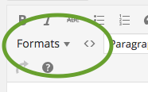
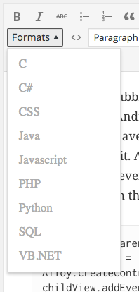
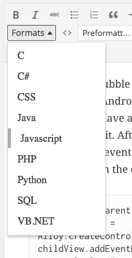

Usage
Wordpress plugin
Download the plugin manually from the Wordpress plugin directory or from within the Wordpress admin.
After activating it, you'll see a formats select box and a code button appear in the toolbar of the editor.

The formats select box and code button

If the cursor is not in a PRE or CODE tag, you cannot select a language.

When the cursor is in a PRE or CODE tag, you can select or toggle a language.
Standalone
- Download the script, language file and stylesheet and add these to your HTML file.
- Add the language classes to each
PREandCODEelement you want to have highlighted. The classes are the keys of theHighlighter.Languageobject in the language file. - Now just call
Highlighter.init();
Extend
You can simply add other languages by extending the Highlighter.Language object.
See the language file for examples.
Change style
There are 4 classes defined in the stylesheet. If you want to change the styles for all languages, just edit it in there or overrule them with your own css file.
If you want to have a different style for a specific language, just add the language class before the 4 highlight classes. For example to style PHP different:
.php span.sfhkeyword {
color:blue;
.php span.sfhquote {
color:green;
}
.php span.sfhcomment {
color:gray;
}
.php span.sfhoperator {
color:red;
}
Limitations
- No Javascript regular expression syntax highlighting
Showcase
Javascript
// A simple object copy function
var simpleCopy = function(src, dest) {
for (var key in src) {
dest[key] = src[key];
}
return dest;
};
var replaceEntities = function(s) {
if (/\d+/.test(s) && /\w+/gi.test(s)) {
console.log("Found it!");
}
return s.replace(/</g, "&lt;");
return s.replace(/hoi[\w]+/g, "-");
};
Java
package com.example.michiel.myapplication;
import android.content.Context;
import android.database.sqlite.SQLiteDatabase;
import android.database.sqlite.SQLiteOpenHelper;
/**
* Created by Michiel on 12-12-2014.
*/
public class TodoDatabaseOpenHelper extends SQLiteOpenHelper {
private static TodoDatabaseOpenHelper instance = null;
private final static String DATABASE_NAME = "todo.db";
private final static int DATABASE_VERSION = 3;
private TodoDatabaseOpenHelper(Context context) {
super(context, DATABASE_NAME, null, DATABASE_VERSION);
}
public static TodoDatabaseOpenHelper getInstance(Context context) {
if (instance == null) {
instance = new TodoDatabaseOpenHelper(context);
}
return instance;
}
@Override
public void onCreate(SQLiteDatabase db) {
TodoTable.onCreate(db);
}
@Override
public void onUpgrade(SQLiteDatabase db, int oldVersion, int newVersion) {
TodoTable.onUpgrade(db, oldVersion, newVersion);
}
}
PHP
$fruits = array("d" => "lemon", "a" => "orange", "b" => "banana", "c" => "apple");
asort($fruits);
foreach ($fruits as $key => $val) {
echo $key . ' = ' . $val . "\n";
}
Python
import threading
from contextlib import contextmanager
_tls = threading.local()
@contextmanager
def _nested():
_tls.level = getattr(_tls, "level", 0) + 1
try:
yield " " * _tls.level
finally:
_tls.level -= 1
@contextmanager
def _recursion_lock(obj):
if not hasattr(_tls, "history"):
_tls.history = [] # can't use set(), not all objects are hashable
if obj in _tls.history:
yield True
return
_tls.history.append(obj)
try:
yield False
finally:
_tls.history.pop(-1)
MySQL
SELECT * FROM my_table WHERE DATE(created) < NOW();
VB.NET
Module MyModule
' Example of events in VB.NET
Sub Main()
Dim c As Counter = New Counter(New Random().Next(10))
AddHandler c.ThresholdReached, AddressOf c_ThresholdReached
Console.WriteLine("press 'a' key to increase total")
While Console.ReadKey(True).KeyChar = "a"
Console.WriteLine("adding one")
c.Add(1)
End While
End Sub
Sub c_ThresholdReached(sender As Object, e As EventArgs)
Console.WriteLine("The threshold was reached.")
Environment.Exit(0)
End Sub
End Module
C#
class Program
{
/* Example of events in C# */
static void Main(string[] args)
{
Counter c = new Counter(new Random().Next(10));
c.ThresholdReached += c_ThresholdReached;
Console.WriteLine("press 'a' key to increase total");
while (Console.ReadKey(true).KeyChar == 'a')
{
Console.WriteLine("adding one");
c.Add(1);
}
}
static void c_ThresholdReached(object sender, EventArgs e)
{
Console.WriteLine("The threshold was reached.");
Environment.Exit(0);
}
}
CSS
body {
background-color:#f0f0f0;
color:black;
padding:1em;
}